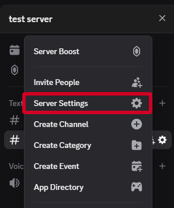
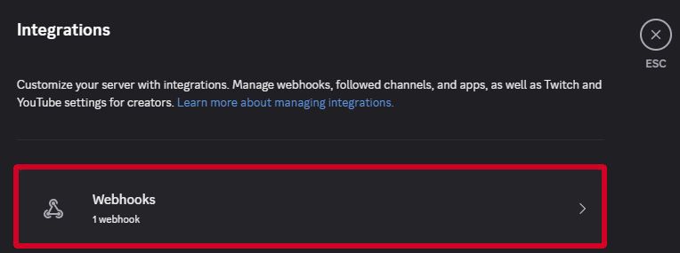
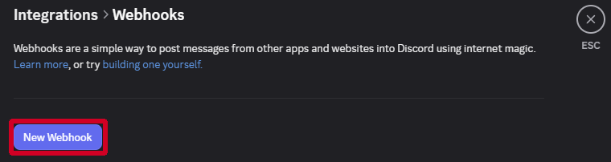
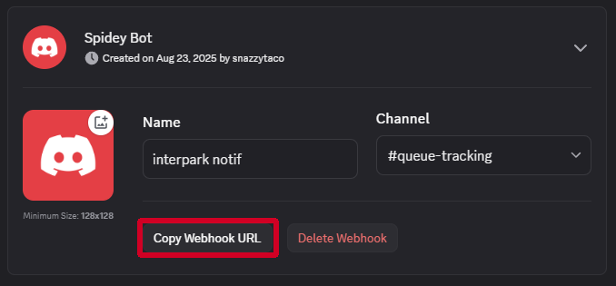
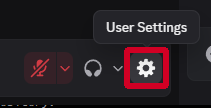
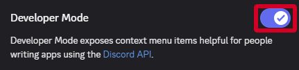
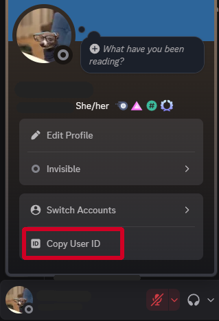

Queue Monitor Help
Get Discord Webhook URL
step 1: Determine server/channel to put bot in
Determine what server you want the bot to run in (you must have admin privelages). You can create a new server or use an existing one. Then, determine what channel that the bot will send its updates. This can also be created new or an existing one.
step 2: Create bot in server



step 3: Copy Webhook URL

Get User ID
step 1: Turn on developer mode


step 2: Copy User ID

General Tips
Inactivity
If your page ticketing page gives a popup that says you've been inactive for too long, make sure you have the page ticketing page 'active' (last clicked on) before you walk away from the computer
Notifications
Set the channel that the bot is posting in to notify only when you've been mentioned.